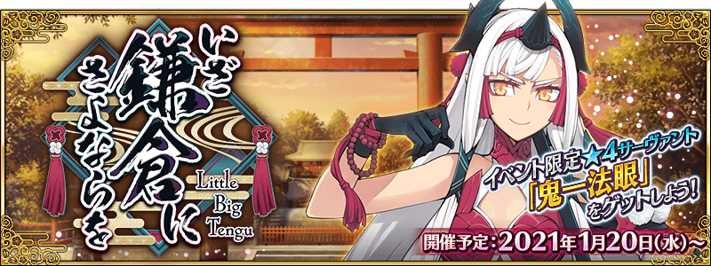
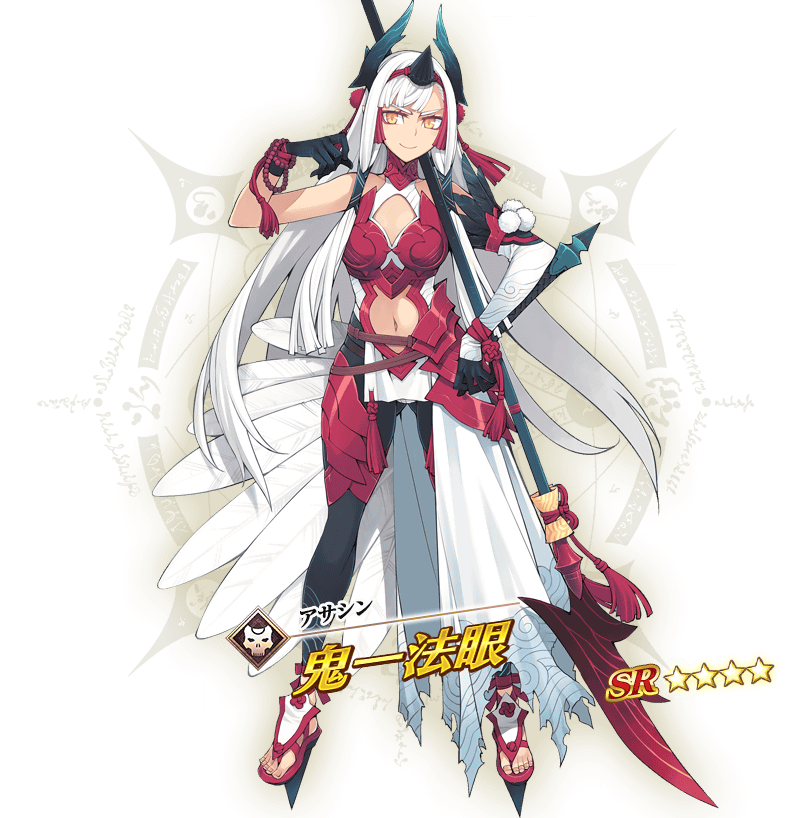
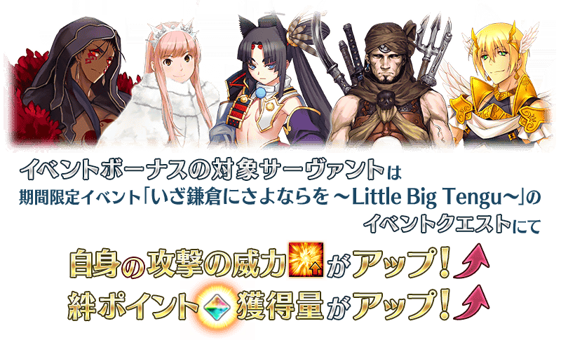

預定舉辦期間限定活動「いざ鎌倉にさよならを ～Little Big Tengu～」！
為了追上靈基發生異常的牛若丸，御主向特異點靈子轉移。
為了確認事情的真相，開始巡迴各地特異點的。
本活動中進行主線關卡的話，活動限定從者「★4(SR)鬼一法眼」會以期間限定暫時加入。
更加推進主線關卡，讓「★4(SR)鬼一法眼」正式加入吧！
※本頁面皆為開發中圖片。會有與實際圖片相異的情況。
◆活動舉辦預定◆
2021年1月20日(三) 17:00～(預定)
◆活動參加條件◆
滿足以下條件的御主才能參加
・通過「特異點F 炎上汙染都市 冬木」

本活動的期間中，強化「★4(SR)鬼一法眼」時的獲得經驗值變成2倍。
是讓活動加成對象「★4(SR)鬼一法眼」等級一口氣上升的機會！

本活動的期間中，下表的從者在活動關卡中會得到「自身的攻擊威力提升」與「絆點數獲得量提升」的加成！
強化對象從者，挑戰活動吧！
※活動加成的效果量因從者而異。

◆對象從者◆
| 職階 | 稀有度 | 從者名 |
|---|---|---|
| Saber | ★★★★★ | 狄奧斯庫洛伊 |
| ★★★★ | 伊莉莎白・巴托里〔Brave〕 | |
| ★★★ | 蓋烏斯・尤利烏斯・凱撒 | |
| ★★★ | 弗格斯・馬克・羅伊 | |
| ★ | 伊阿宋 | |
| Archer | ★ | 織田信勝 |
| Lancer | ★★★★★ | 斯卡哈 |
| ★★★★ | 伊莉莎白・巴托里 | |
| ★★★★ | 貞德・Alter・聖誕・Lily | |
| ★★★★ | 美杜莎 | |
| ★★ | 武藏坊弁慶 | |
| Rider | ★★★★★ | 伊斯坎達爾 |
| ★★★★★ | 女王梅芙 | |
| ★★★ | 亞歷山大 | |
| ★★★ | 牛若丸 | |
| Caster | ★★★★★ | 伊莉雅絲菲爾・馮・愛因茲貝倫 |
| ★★★★★ | 諸葛孔明〔艾梅洛Ⅱ世〕 | |
| ★★★★★ | 紫式部 | |
| ★★★★ | 愛麗絲菲爾〔天之衣〕 | |
| ★★★★ | 伊莉莎白・巴托里〔萬聖節〕 | |
| ★★★★ | 美狄亞〔Lily〕 | |
| ★★★ | 美狄亞 | |
| Assassin | ★★★★ | 鬼一法眼 |
| ★★★★ | 格蕾 | |
| Berserker | ★★★★★ | 庫・夫林〔Alter〕 |
| ★★★★ | 貞德〔Alter〕 | |
| Avenger | ★★★★★ | 貞德〔Alter〕 |
| ★★★★★ | 魔王信長(織田信長) | |
| ★★★★ | 戈爾貢 | |
| Alterego | ★★★★★ | 志度內 |
※就算成為對象從者也會有未在本活動的主線劇本登場的情況。
※自1月17日(日) 18:30，在從者選擇畫面和從者強化畫面等，追加活動加成篩選器。
由於是只顯示於活動活躍從者的便利功能，敬請活用。
※「★5(SSR)魔王信長(織田信長)」是「★5(SSR)織田信長」靈基再臨到第3階段的話名稱會變成「★5(SSR)魔王信長」。